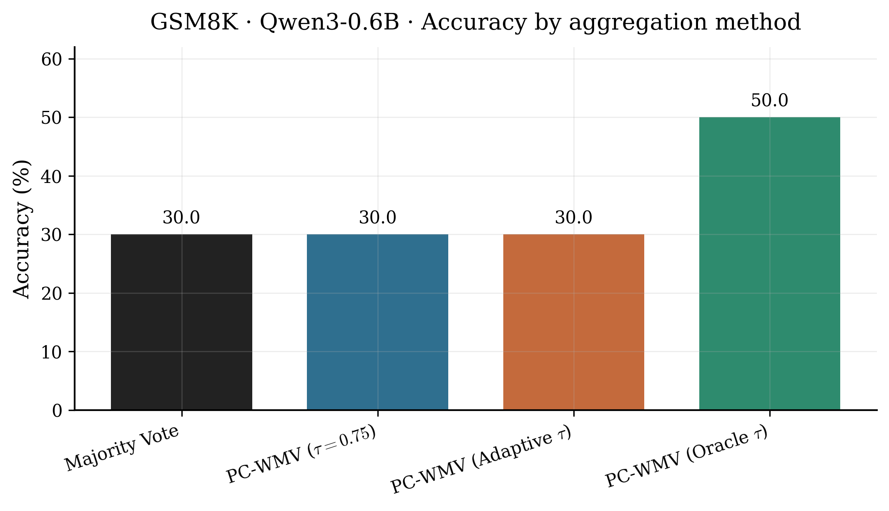
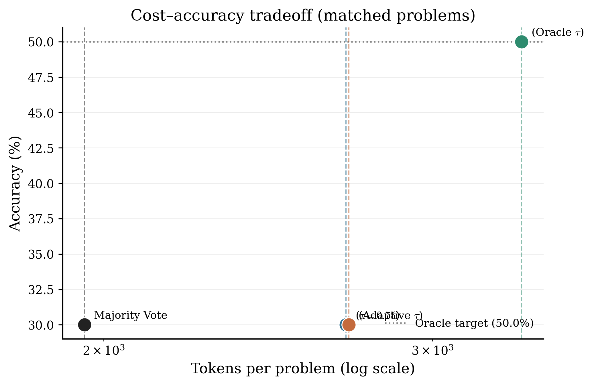
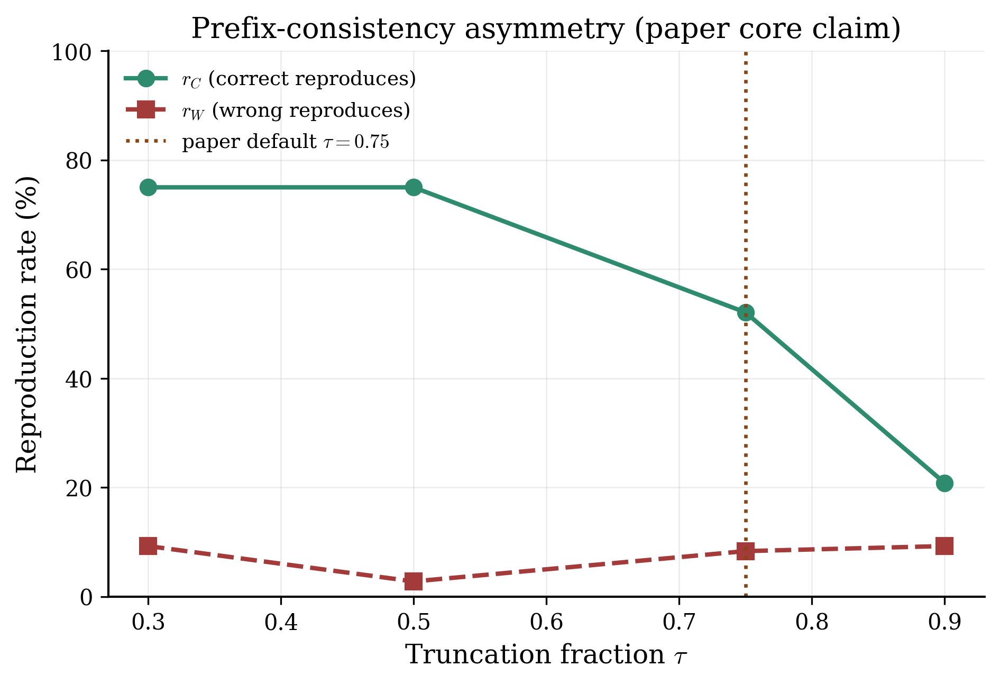
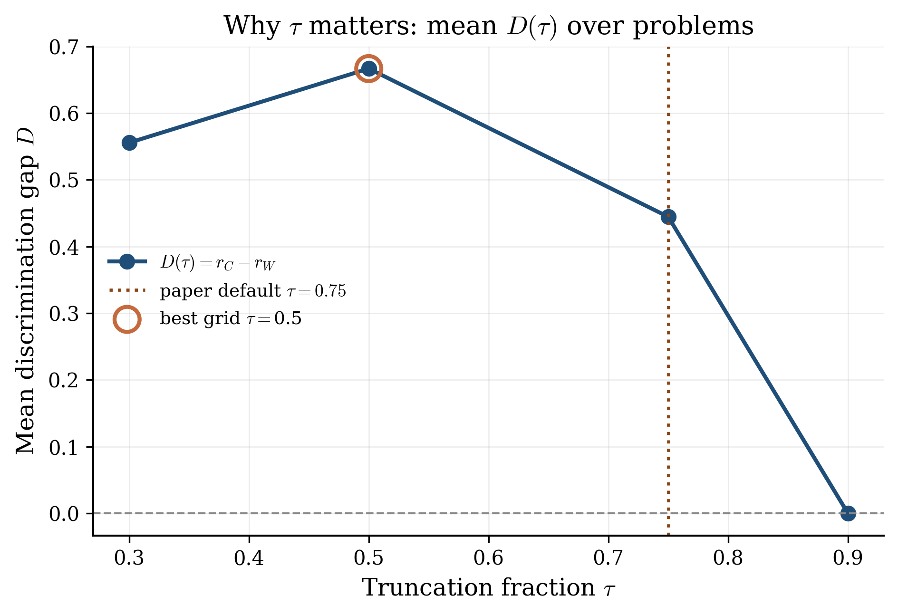
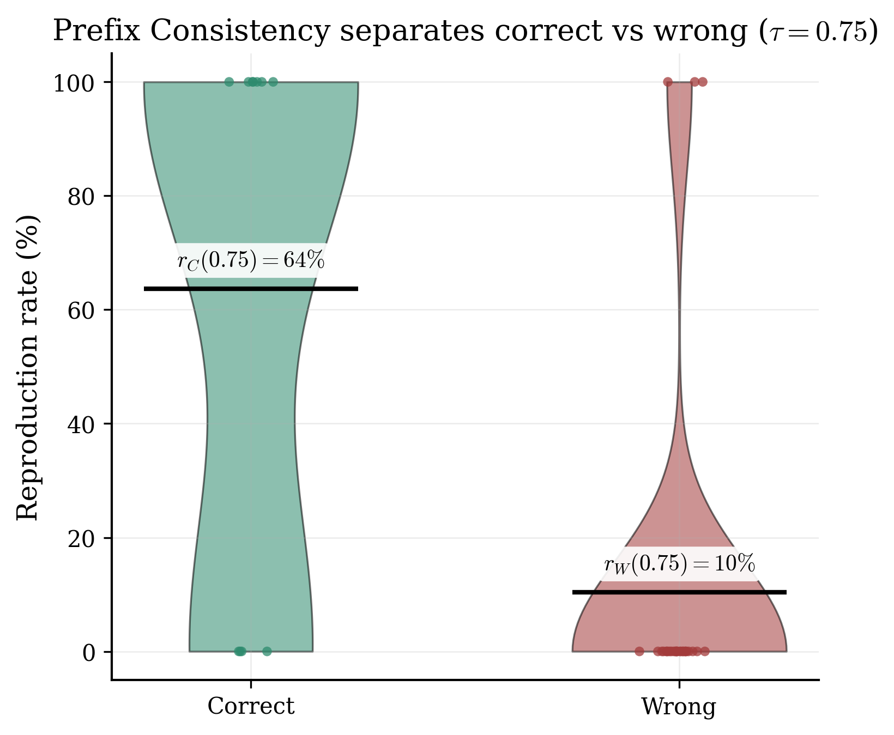
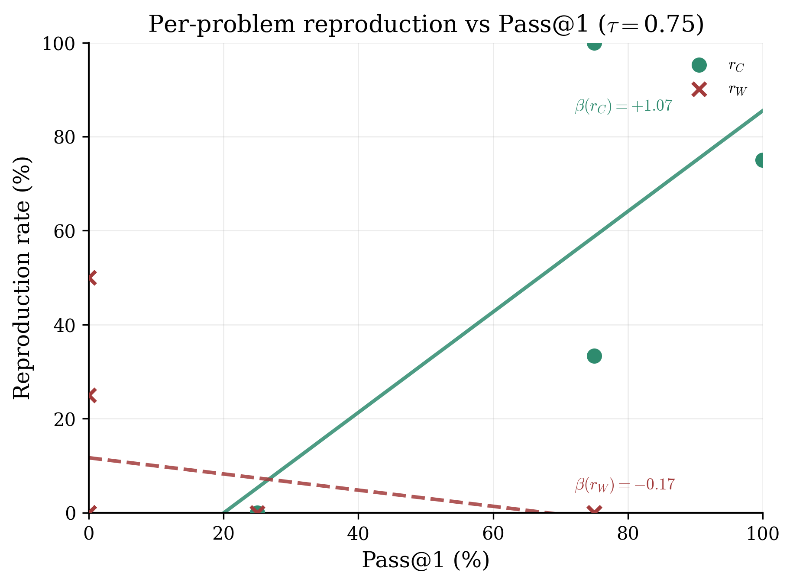
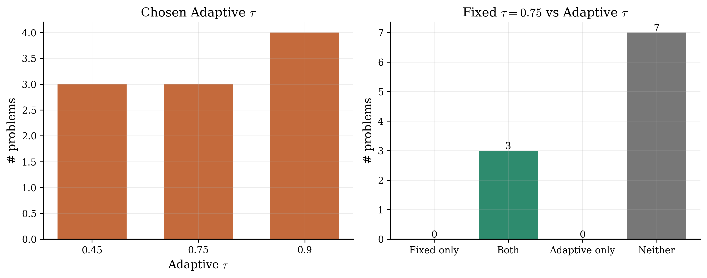

A preliminary study extending PC-WMV with per-problem truncation τ same voting rule as Iwase et al. (2026), different τ selection run honestly under free Colab T4 limits.
Prefix consistency measures whether a Chain-of-Thought (CoT) answer reappears after truncating the trace at fraction τ and regenerating. The paper fixes τ = 0.75. Their limitations note that τ is not chosen adaptively. So:
On identical data, does adaptive τ beat PC-WMV with τ = 0.75? Oracle τ (gold-chosen analysis only) asks how large the room for improvement is.
Aggregation follows the paper (Eqs. 7–8 / Algorithm 1, K = 1, cubic weights). Adaptive τ uses a label-free pilot: answer agreement among early samples maps to : easy → 0.45, medium → 0.75, hard → 0.90.
All generation ran on Google Colab free T4. That ruled out paper-scale models and large N. I used Qwen3-0.6B on 10 GSM8K problems so the comparison stayed fair and finishable not so I could claim olympiad-level token savings.
Fixed and Adaptive PC-WMV tied Majority Vote at 30%. Oracle τ reached 50% an upper bound showing τ selection can matter, even when my heuristic did not win yet.The paper reports accuracy versus total token budget by varying the number of reasoning samples, demonstrating that PC-WMV achieves a target accuracy using substantially fewer overall tokens than Standard Majority Vote whereas I had fixed number of samples in a single run. Therefore, the two comparisons evaluate different aspects of computational performance.
| Method | Accuracy | Mean tokens |
|---|---|---|
| Majority Vote | 30.0% | 1,953 |
| PC-WMV (τ = 0.75) | 30.0% | 2,697 |
| PC-WMV (Adaptive τ) | 30.0% | 2,706 |
| PC-WMV (Oracle τ) | 50.0% | 3,349 |


Even on this small model, rC ≫ rW: correct traces reproduce more than wrong ones. Mean discrimination gap D(τ) peaks near τ = 0.5, not the paper default 0.75, and collapses at 0.9, evidence that τ should be chosen carefully.
| τ | Mean rC | Mean rW | Mean D |
|---|---|---|---|
| 0.30 | 0.75 | 0.09 | 0.56 |
| 0.50 | 0.75 | 0.03 | 0.67 |
| 0.75 | 0.52 | 0.08 | 0.44 |
| 0.90 | 0.21 | 0.09 | 0.00 |





With stronger compute, I would replace difficulty bins with a label-free selector aimed at maximizing estimated D(τ), scale beyond 10×4, move to harder benchmarks closer to the paper, and study PC-WMV hybrids with adaptive stopping left open in their work.